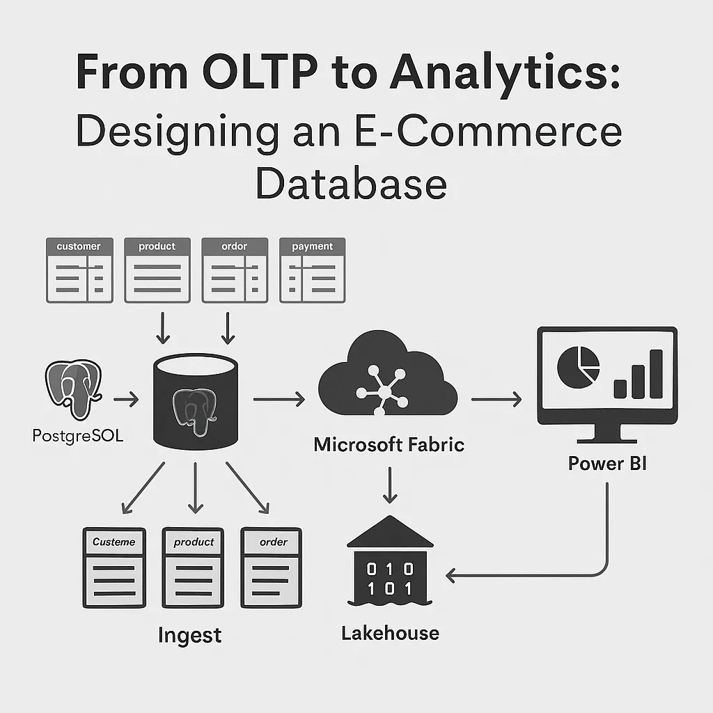
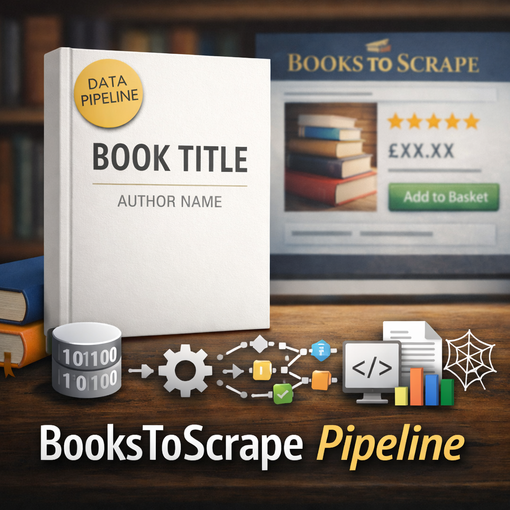
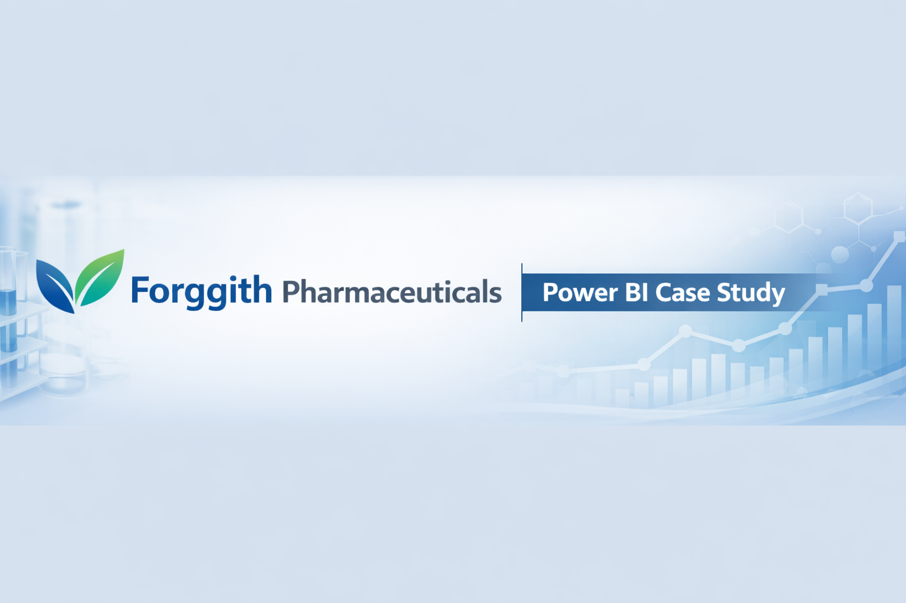
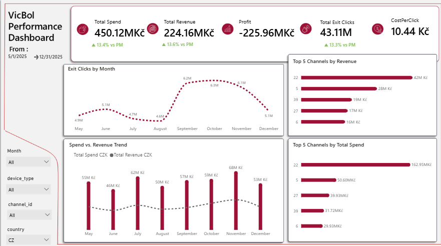

Data Engineer • Analytics Engineer • Business Intelligence Engineer
I am a Data Engineer and Analytics Engineer focused on building clean, reliable, analytics‑ready datasets that power insights and decision‑making. I specialize in designing end‑to‑end data pipelines, transforming raw data into structured, governed, high‑quality assets.
My technical toolkit includes Python, SQL, Snowflake, dbt, Power BI, and modern data engineering practices. I have delivered projects across healthcare, ecommerce, media, and operations — including ETL pipelines, data quality frameworks, and analytical dashboards.
I hold certifications in Azure Fundamentals (AZ‑900), Power BI (PL‑300), Data Engineering (DataCamp), and Big Data Analytics in Finance. My work blends engineering discipline with analytical storytelling to help organizations understand their data and act on it.
I’m an Analytics Engineer with a strong foundation in data analysis, business intelligence, and governance. My work centers on designing clean, reliable, analytics‑ready datasets that drive insight and operational excellence across organizations.
I bring a hybrid perspective — combining the precision of a Data Analyst, the storytelling of a BI Developer, and the architectural mindset of a Data Engineer. I design end‑to‑end data solutions that span ingestion, transformation, modeling, and visualization, ensuring every layer of the data stack supports trust, scalability, and impact.
My technical toolkit includes Python, SQL, Snowflake, dbt, Power BI, and Azure, complemented by strong data modeling and quality management practices. I’m deeply invested in Data Governance and am currently preparing for the DAMA certification to strengthen my expertise in metadata management, data quality, and stewardship frameworks.
I’ve delivered projects across healthcare, ecommerce, and media — building ETL pipelines, analytical models, and interactive dashboards that translate complex data into actionable intelligence. My goal is to bridge the gap between engineering and analytics, helping organizations evolve toward modern, governed, insight‑driven data ecosystems.

This project is a fully‑built, end‑to‑end analytics solution developed in Microsoft Fabric, showcasing modern data engineering practices using the Medallion Architecture (Bronze → Silver → Gold). It demonstrates ingestion, transformation, orchestration, modeling, and reporting using a real‑world e‑commerce dataset.

End‑to‑end data engineering pipeline featuring web scraping, transformation, storage, and automated workflows built with Python OOP and best‑practice architecture.
Exploratory analysis of Netflix’s catalog using Python, focusing on genre trends, release patterns, and content distribution across countries.

A Power BI project that transforms raw distributor submissions into a unified, analytics‑ready model and an interactive dashboard that supports strategic, tactical, and operational decision‑making.

VicBol Performance Analytics is a complete end‑to‑end Power BI project analyzing marketing performance across spend, traffic, and revenue from May–December 2025. The goal was to build a clean, executive‑ready dashboard